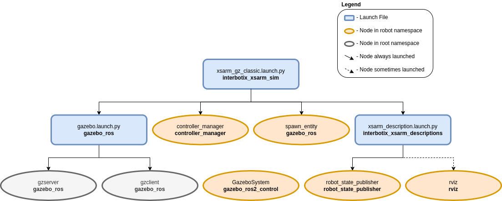

Simulation Configuration
 View Package on GitHub
View Package on GitHub
Overview
This package contains the necessary config files to simulate any of the many Interbotix X-Series arms. For now, this package is only able to simulate the arms in Gazebo Classic. Below is a description of each supported simulation environment’s configuration.
- Gazebo Classic - Contains parameter files that configure trajectory_controllers so that gazebo_ros2_control can control the arms effectively. This package has one of two applications. It can either be used in conjunction with MoveIt via the FollowJointTrajectory interface or it can be used by itself via the JointTrajectoryController interface.
Structure
As shown above, the interbotix_xsarm_sim package builds on top of the interbotix_xsarm_descriptions and other simulator’s ROS 2 compatibility packages. To get familiar with the nodes in the interbotix_xsarm_descriptions package, please look at its README. The other nodes are described below:
- Gazebo Classic:
- gzserver - responsible for running the physics update-loop and sensor data generation
- gzclient - provides a nice GUI to visualize the robot simulation
- controller_manager - responsible for loading and starting a set of controllers at once, as well as automatically stopping and unloading those same controllers
- spawn_model - adds the robot model as defined in the ‘robot_description’ parameter into the Gazebo world
Usage
Gazebo Classic
To run this package, enter the command line below in a terminal (assuming the WidowX-250 is being launched).
$ ros2 launch interbotix_xsarm_sim xsarm_gz_classic.launch.py robot_model:=wx250
This is the bare minimum needed to get up and running. Take a look at the table below to see how to further customize with other launch file arguments.
| Argument | Description | Default | Choices |
|---|---|---|---|
| robot_model | model type of the Interbotix Arm such as wx200 or rx150. |
px100, px150, rx150, rx200, wx200, wx250, wx250s, vx250, vx300, vx300s, mobile_px100, mobile_wx200, mobile_wx250s |
|
| robot_name | name of the robot (typically equal to robot_model, but could be anything). |
LaunchConfig(robot_model) |
|
| use_rviz | launches RViz if set to true. |
true |
true, false |
| rvizconfig | file path to the config file RViz should load. | LocalVar(‘FindPackageShare(pkg= interbotix_xsarm_sim) + ‘rviz’ + ‘xsarm_gz_classic.rviz’’) |
|
| world_filepath | the file path to the Gazebo ‘world’ file to load. | LocalVar(‘FindPackageShare(pkg= interbotix_common_sim) + ‘worlds’ + ‘interbotix.world’’) |
|
| use_gazebo_gui | launches the Gazebo GUI if true. |
true |
true, false |
| verbose | launches Gazebo with verbose console logging if true. |
false |
true, false |
| debug | start gzserver in debug mode using gdb. | false |
true, false |
| paused | start Gazebo in a paused state. | false |
true, false |
| recording | enable Gazebo state log recording. | false |
true, false |
| use_sim_time | tells ROS nodes asking for time to get the Gazebo-published simulation time, published over the ROS topic /clock. | true |
true, false |
| base_link_frame | name of the ‘root’ link on the arm; typically base_link, but can be changed if attaching the arm to a mobile base that already has a base_link frame. |
base_link |
|
| use_gripper | if true, the default gripper is included in the robot_description parameter; if false, it is left out; set to false if not using the default gripper. |
true |
true, false |
| show_ar_tag | if true, the AR tag mount is included in the robot_description parameter; if false, it is left out; set to true if using the AR tag mount in your project. |
false |
true, false |
| show_gripper_bar | if true, the gripper_bar link is included in the robot_description parameter; if false, the gripper_bar and finger links are not loaded. Set to false if you have a custom gripper attachment. |
true |
true, false |
| show_gripper_fingers | if true, the gripper fingers are included in the robot_description parameter; if false, the gripper finger links are not loaded. Set to false if you have custom gripper fingers. |
true |
true, false |
| use_world_frame | set this to true if you would like to load a ‘world’ frame to the robot_description parameter which is located exactly at the ‘base_link’ frame of the robot; if using multiple robots or if you would like to attach the ‘base_link’ frame of the robot to a different frame, set this to false. |
true |
true, false |
| external_urdf_loc | the file path to the custom urdf.xacro file that you would like to include in the Interbotix robot’s urdf.xacro file. | ‘’ | |
| hardware_type | configures the robot_description parameter to use the actual hardware, fake hardware, or hardware simulated in Gazebo. |
gz_classic |
actual, fake, gz_classic |
| robot_description | URDF of the robot; this is typically generated by the xacro command. | Command(FindExec(xacro) + ‘ ‘ + LocalVar(‘FindPackageShare(pkg= interbotix_xsarm_descriptions) + ‘urdf’ + LaunchConfig(robot_model)’) + ‘.urdf.xacro ‘ + ‘robot_name:=’ + LaunchConfig(robot_name) + ‘ ‘ + ‘base_link_frame:=’ + LaunchConfig(base_link_frame) + ‘ ‘ + ‘use_gripper:=’ + LaunchConfig(use_gripper) + ‘ ‘ + ‘show_ar_tag:=’ + LaunchConfig(show_ar_tag) + ‘ ‘ + ‘show_gripper_bar:=’ + LaunchConfig(show_gripper_bar) + ‘ ‘ + ‘show_gripper_fingers:=’ + LaunchConfig(show_gripper_fingers) + ‘ ‘ + ‘use_world_frame:=’ + LaunchConfig(use_world_frame) + ‘ ‘ + ‘external_urdf_loc:=’ + LaunchConfig(external_urdf_loc) + ‘ ‘ + ‘hardware_type:=’ + LaunchConfig(hardware_type) + ‘ ‘) |